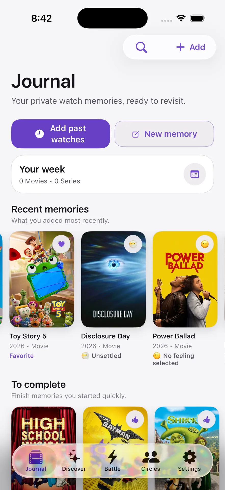
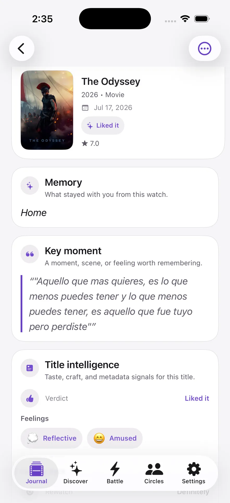
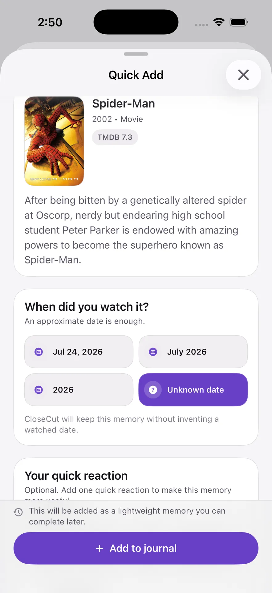
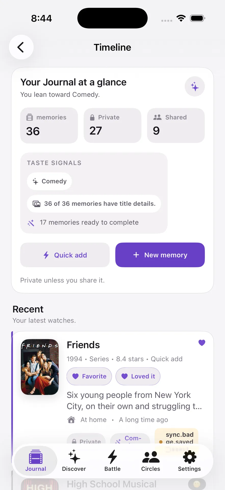
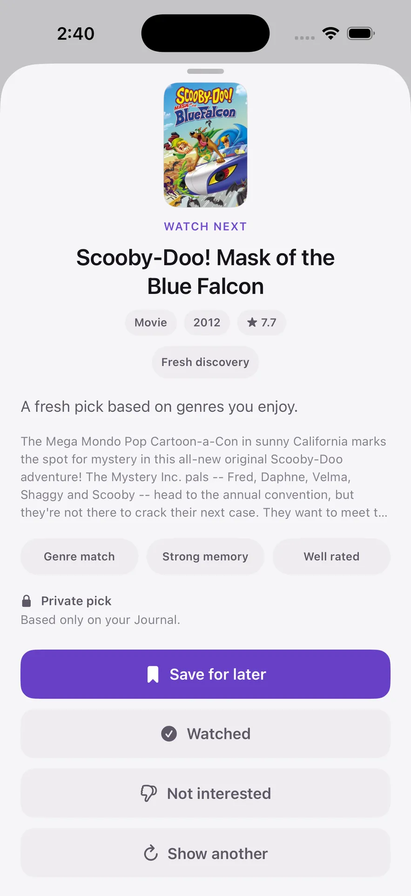
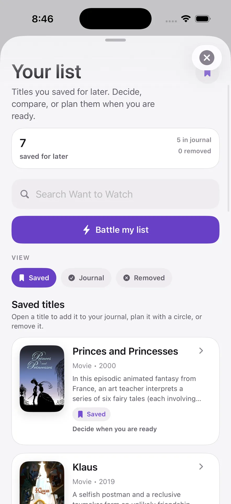
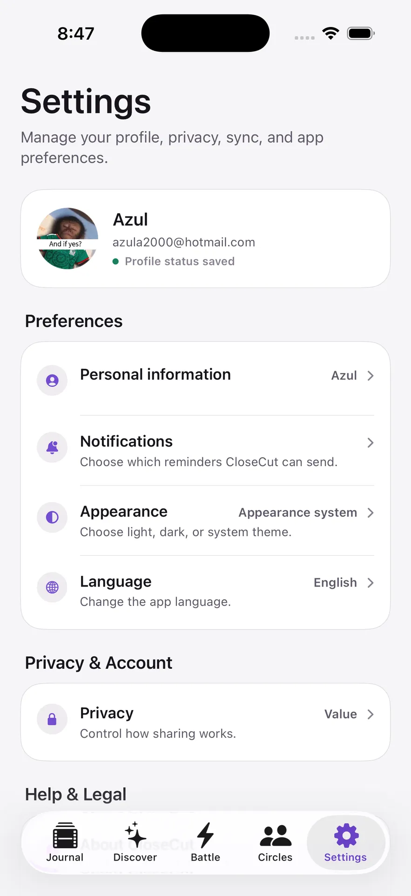

CloseCut for iPhone
CloseCut for iPhonePrivate by default · Currently in beta
A private Journal for what you watch.
Capture the feeling, context, and memory behind every movie or series, then use your own taste history to choose what comes next.
Internal TestFlight beta · No ads, subscriptions, or in-app purchases in the current version.

A quieter place for your taste
A rating remembers the score.
A Journal remembers you.
Most movie apps focus on public ratings, feeds, and reviews. CloseCut focuses on what a title meant to you and what you want to remember.
01
Private Journal
Keep the memory behind the title.
Build a personal watch history with moods, notes, tags, quotes, verdicts, watch context, and cinema details. Entries begin private and stay yours until you explicitly share them.
- Rich memories, not public performance
- Movies and series together
- Private by default


02Choose the momentRecently, this year, a long time ago, or an unknown date. Keep it lightweightA date and quick reaction are enough to start the memory. Return when it mattersComplete notes, quotes, moods, and context later.
Quick Add
Add past watches in seconds.
Your history did not start when you installed the app. Search a movie or series, choose an approximate date, add a quick reaction if you want, and complete the memory later.
03
Timeline
See how your taste becomes a history.
Revisit recent memories, notice recurring signals, and see which entries are private or shared. The Timeline grows from the moments you choose to keep.


04Understand the pickSee the taste signals that brought a title forward. One option at a timeNo endless recommendation feed to keep scrolling. Stay in controlSave it, mark it watched, dismiss it, or ask for another.
QuickPick
One private pick, with a reason.
QuickPick is rule-based and grounded in your Journal. It uses signals such as moods, tags, genres, and past entries to offer a focused option and explain why it appeared.
05
Want to Watch
Save the possibility. Decide when you are ready.
Keep titles for later, search your list, compare them privately, or turn one into a Journal entry or Watch Plan when the moment arrives.

06Local-firstSupported content is written locally before pending sync. Explicit sharingYou choose the entry and the private Circle. Account controlsPassword reset, sign out, and account deletion are available. No advertising modelNo ads, subscriptions, or in-app purchases in the current version.
Privacy
Private first. Sharing is a choice.
CloseCut is local-first with supported Firebase synchronization. Journal entries are private by default, and sharing happens only when you explicitly select a Circle.

Watch Together
Make a plan. Keep it simple.
Choose a title, propose a time or place, invite Circle members, and collect responses. Watch Plans support thoughtful coordination at your own pace.
Choose a title→Propose a plan→Collect responses
08
Cinema Memories
Remember the room, not just the release.
Save cinema name, room type, screen, audio, comfort, and the details that shaped the experience. It stays part of your personal memory—not a public theater review.
Help shape CloseCut
Join the TestFlight Beta.
Try the current iPhone beta and share feedback while CloseCut continues to take shape.
Join the TestFlight Beta Requires Apple's TestFlight app. Beta builds may change.